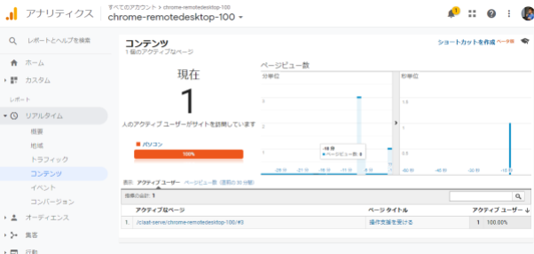
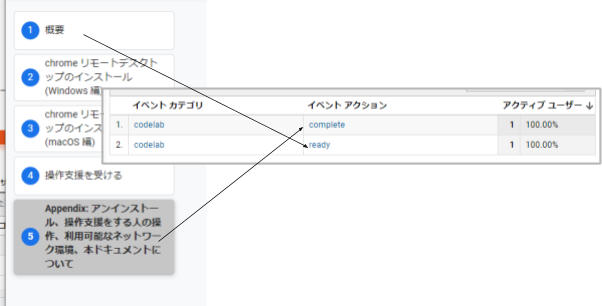
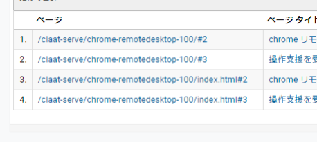

ハンズオンコンテンツ生成・ポータルフレームワーク "CLaaT" はGoogle Analytics(以下、GA)を用いたコンテンツ分析が可能です。本ハンズオンではGAトラッキングIDの設定の仕方からCLaaTが備えている標準のイベント解説、ページ途中における「目標」(コンバージョン)設定と確認方法を学びます。

ページの内容を読み、また作業を行ったら右下の［Next］を押して次のステップへ進みます。また、［Back］を使って戻ったり、左のナビゲーションメニューでもページの移動が可能です。
左上の［×］を押してコンテンツを終了することができます。また、ページを開きなおすことで再開できます。ページのアドレスはブラウザの［履歴］メニューを利用してください。
ソースドキュメントはこちら
必要なものは以下の通りです。
claat export の -ga オプションに GA トラッキングコードを指定して claat export します。
$ claat export -ga [GA Tracking ID] [Google Docs ID]
となります。
例)
$ claat export -ga "UA-XXXXXX-XX" 1FXJGzsrTjDkHTtfaOsZkzZeU7ZUZQ7M52hHuKm9Fl8o生成し終わったらアップロードしましょう。
CLaaT には GA と連携する仕組み、すなわちヒットの送信が備わっています。標準の仕様は以下の通りです。
最初のページ(/#0) には ready が、最後のページには complete が GA イベントアクションとして送信されるようになっています。

イベントカテゴリ |
|
イベントアクション |
|
イベントラベル | ソースドキュメントのタイトル もしくは |
発生したイベントは［リアルタイム］>［イベント］で確認できます。
CLaaT はページトラッキングを送信しているため、イベントとは別に目標(以下、CV)を設定する事が可能です。これにより complete イベント(= 最終ページ)とは異なるページで「到達」を記録することができます。
CV の指定方法は一般的な GA の CV 設定と同じになります。
この際、ビューでデフォルトのページを設定している場合は、到達パスにもデフォルトのページの設定を考慮したパスを指定する必要があります。詳細はより精度の高い計測を行うための設定を参照ください。
デフォルトのページ | 到達パスに設定すべき値 |
(無し) |
|
|
|
発生した CV は［リアルタイム］>［コンバージョン］で確認できます。
標準でもかなり便利に利用できますが、設定を行うことで精度の高い計測が行えます。
1ページ内の作業量が多い(= 時間がかかる)場合に検討します。
セッションは30分でタイムアウトします。そのため、1ページ内の作業量が標準をこえるとセッションがタイムアウトしてしまうため、延ばすことを検討しましょう。もしくは作業内容を分割することも有効です。
セッションのタイムアウトは1ページで最大滞在時間になりそうなページの時間(+10%くらい？)に設定するのが良いでしょう。
アップロード先システムの「デフォルトドキュメント」が index.html じゃない場合に検討します。また、リンク元が(勝手に) /index.html 等と付けてしまう場合が想定されるときにも検討します。
デフォルトのページを設定しない場合、以下のようにコンテンツ的には同じなのに別のページビューとして計測されてしまいます。回避するためにはビューのデフォルトのページを設定します。以下の場合はデフォルトのページに index.html を設定することで / のヒットが /index.html に寄せることができます。

注意点としては CV を設定した際の到達パスの指定です。詳しくは「目標」の設定を参照ください。
途中でブラウザを閉じてしまっても、元のナビゲーション位置に戻ることができるのがウリの CLaaT ですが、その際のページビューは / になります。(#3 といったページになりません)
お疲れさまでした、これで本コンテンツは終了です。
本ドキュメントは閉じてしまって構いません。